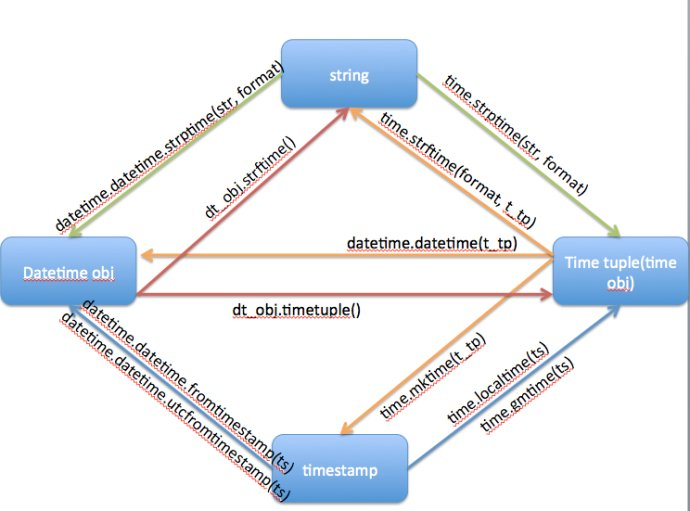

时间戳转换方法 发表于 2015-12-25 | 分类于 Code 123456789101112131415161718192021datetime = datetime.datetime.now()timestamp = time.time()datetime_format = %Y-%m-%d %H:%M:%S# str -> datetimedatetime.datetime.strptime(string, datetime_format)# datetime -> strdatetime.datetime.strftime(datetime_format)type(a) -> datetime.datetimea.strftime(datetime_format)# datetime -> timestamptime.mktime(datetime.datetime.timetuple())# timestamp -> datetimedatetime.datetime.fromtimestamp(timestamp)datetime.datetime.fromtimestamp(timestamp).strftime(datetime_format)# timestamp -> timetime.localtime(timestamp) 